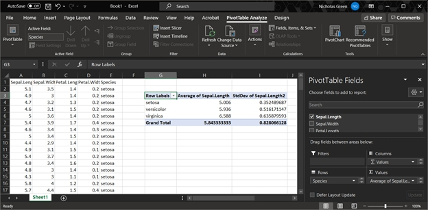
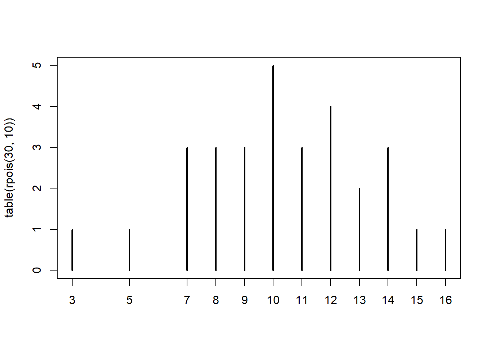

In the last module we saw how single variables can be described or summarized using descriptive statistics (see Chapter 6). In this chapter we will extend that to summarizing values by groups. Indeed, comparing the mean values in different groups is one of the most important types of tests we do in biology (see Chapter 11).
7.1 Summarizing a data frame
You can get a quick numerical summary of a vector or a dataset with summary(). The examples below use the built-in dataset iris.
# summarize a data framesummary(iris)
Sepal.Length Sepal.Width Petal.Length Petal.Width
Min. :4.300 Min. :2.000 Min. :1.000 Min. :0.100
1st Qu.:5.100 1st Qu.:2.800 1st Qu.:1.600 1st Qu.:0.300
Median :5.800 Median :3.000 Median :4.350 Median :1.300
Mean :5.843 Mean :3.057 Mean :3.758 Mean :1.199
3rd Qu.:6.400 3rd Qu.:3.300 3rd Qu.:5.100 3rd Qu.:1.800
Max. :7.900 Max. :4.400 Max. :6.900 Max. :2.500
Species
setosa :50
versicolor:50
virginica :50
# summarize a single variablesummary(iris$Petal.Length)
Min. 1st Qu. Median Mean 3rd Qu. Max.
1.000 1.600 4.350 3.758 5.100 6.900
The function summary() has methods for many other types of R objects such as glm, lm, aov, and so on.
7.1.1 Summarizing by groups (AKA: pivot tables)
One of the most common data operations is aggregation, or summarization by groups. In Excel, this is done using Pivot Tables. In R, the functions aggregate() and tapply() are used for pivot table-like functionality. The tidyverse equivalent for aggregate() and tapply() is dplyr::summarise(). All of these can be much more powerful than an Excel pivot table because while Excel pivot tables are limited to a small set of built-in functions, R can aggregate by any function.
Example of a pivot table in Excel

7.1.1.1aggregate()
The base R workhorse for summarizing data by groups is aggregate(). It is straightforward and powerful enough to cover almost all use cases. The most important inputs to aggregate() are the data to be summarized, the variable or variables that define the groups, and the function by which to summarize. The examples below shows how to calculate the mean petal length for each species in the iris dataset.
If the variable to be summarized and the grouping variables are in the same data frame (which is usually the case), you can use the formula interface to aggregate(); otherwise, use the by= interface.
# example using by=aggregate(iris$Petal.Length,by=list(iris$Species), mean)
The formula interface is cleaner and easier than the by= interface (first example), and has the key advantage that it automatically passes variable names to the result. If you use by= you may want to rename the columns in the result.
In my own code I prefer to name my aggregation tables agg, with additional parts like agg1, agg.fish, and so on if needed. Function aggregate() produces a data frame with a column for each grouping variable (Group.1, Group.2 and so on) and a single column x containing the summarized values. We can use this property to construct tables that summarize by more than one variable.
# spare copyx <- iris# add another grouping variablex$color <-c("red", "white")# by= example: notice how columns in result need to be renamedagg <-aggregate(x$Petal.Length,by=list(x$Species, x$color), mean)agg
Group.1 Group.2 x
1 setosa red 1.456
2 versicolor red 4.308
3 virginica red 5.564
4 setosa white 1.468
5 versicolor white 4.212
6 virginica white 5.540
spp color mean
1 setosa red 1.456
2 versicolor red 4.308
3 virginica red 5.564
4 setosa white 1.468
5 versicolor white 4.212
6 virginica white 5.540
# formula example: much easieragg <-aggregate(Petal.Length~Species+color, data=x, mean)agg
Species color Petal.Length
1 setosa red 1.456
2 versicolor red 4.308
3 virginica red 5.564
4 setosa white 1.468
5 versicolor white 4.212
6 virginica white 5.540
Notice that in agg the values are sorted by the grouping variables from right to left: in this example, by color, then Species. This is the reverse of the order in the original command. The result of aggregate() is a data frame, so data within it can be rearranged using order().
Often we want to summarize a variable by multiple functions–for example, to get a table with the mean and SD in each group. My preferred way to do this is to use several aggregate() commands, and then combine the results. The examples below shows two ways to construct a table with the mean and SD of a variable.
# define a formula and save some typing:f1 <-formula(Petal.Length~Species)# method 1: single table using formulaagg <-aggregate(f1, data=x, mean)agg$sd <-aggregate(f1, data=x, sd)$Petal.Lengthnames(agg)[which(names(agg) =="Petal.Length")] <-"mn"agg
The $Petal.Length on the end of aggregate() is important because we want only column Petal.Length of the output. Without $Petal.Length, the result will be messy when we try to add it to agg. If you ever want to do this with the by= method, the column of the output containing the summarized values will be named x.
# method 1a: single table, using by=agg <-aggregate(iris$Petal.Length, by=list(iris$Species), mean)## note use of $x:agg$sd <-aggregate(iris$Petal.Length, by=list(iris$Species), sd)$x# change names in result:names(agg)[which(names(agg) =="x")] <-"mn"names(agg)[which(names(agg) =="Group.1")] <-"species"agg
The second approach is to make several aggregate() tables, and combine them into a single result.
# method 2: multiple tables# (note: there are lots of ways to do this)agg.mn <-aggregate(f1, data=x, mean)agg.sd <-aggregate(f1, data=x, sd)agg <-data.frame(agg.mn, sd=agg.sd$Petal.Length)names(agg)[2] <-"mn"agg
The base function tapply(), like aggregate(), summarizes a numeric variable by a grouping variable. In fact, aggregate() uses tapply() internally. The difference is that while aggregate() returns a data frame, tapply() returns an array with number of dimensions equal to the number of grouping variables. The inputs are a vector to be summarized, a grouping variable or set of variables, and the function by which to summarize.
# spare copyx <- iris# add some extra grouping variablesx$color <-c("red", "white")x$treat <-c("a", "b", "c")# tapply by 1 variabletapply(x$Petal.Length, x$Species, mean)## setosa versicolor virginica ## 1.462 4.260 5.552
# tapply by 2 variablestapply(x$Petal.Length, x[,c("Species", "color")], mean)
color
Species red white
setosa 1.456 1.468
versicolor 4.308 4.212
virginica 5.564 5.540
# tapply by 3 variables
tapply(x$Petal.Length, x[,c("Species", "color", "treat")], mean)
# vary the arrangement of groups:tapply(x$Petal.Length, x[,c("color", "Species")], mean)
Species
color setosa versicolor virginica
red 1.456 4.308 5.564
white 1.468 4.212 5.540
Personally, I prefer aggregate() to tapply() because it is usually more convenient to have the results in a data frame. You also need to be more careful with tapply() because it will interpret factors as factors and thus return values for missing levels. aggregate(), on the other hand, will drop the missing levels.
# aggregate drops the missing levels.aggregate(Petal.Length~Species, data=iris[1:100,], mean)
Species Petal.Length
1 setosa 1.462
2 versicolor 4.260
# tapply includes the missing levelstapply(iris$Petal.Length[1:100], iris$Species[1:100], mean)
setosa versicolor virginica
1.462 4.260 NA
Which behavior you want depends on what you are trying to do. Just be aware that aggregate() and tapply() might return different numbers of values depending on what you have already done to your data frame.
7.1.2 Summarizing by arbitrary functions
If you’ve ever used Excel Pivot Tables, you will have noticed that data can only be summarized by a limited set of functions. On the other hand, aggregate() (and tapply(), but we’ll focus on aggregate()) can be used with pretty much any function that takes in a vector and returns a scalar. You can even write your own functions! Below are some examples. Notice in the first example that arguments to the summarizing function follow its name.
# first quartile (25th percentile)aggregate(Petal.Length~Species, data=iris, quantile, 0.25)
The following examples illustrate anonymous functions: functions defined within another function and never defined in the R workspace. The x in function(x) is taken to be the values within each group defined by the variable(s) on the right-hand side of ~ or in by=. Notice that the end of such a command will need a lot of ), }, and sometimes ]. Using an editor with syntax highlighting is very helpful!
# number of missing valuesaggregate(Petal.Length~Species,data=iris,function(x){length(which(is.na(x)))})
Being able to use almost any function, and to define your own functions, makes aggregate() an immensely powerful tool to have in your R toolbox.
7.2 The apply() family
The apply() family is a group of functions that operate over the dimensions or margins an object. You can use the apply() family to summarize across rows or columns, or across elements of a list, and so on. The function used most often is apply(), which works on data frames, matrices and arrays. There are also lapply(), which works on lists and returns a list; sapply(), which operates on lists and returns the simplest object possible; and a few others.
We already saw tapply(), which works on subsets of a data frame or array.
7.2.1apply() for arrays and data frames
Function apply() works on data frames or arrays with \(\ge2\) dimensions. Its arguments are the object to be operated on, the margin (or dimension) on which to operate, and the operation (or function). The first margin is rows, the second is columns, and so on. The result of apply() will always have one fewer dimension than the input.
Some typical apply() commands are demonstrated below. The first calculates the sum of values in each row (margin 1) of its input x.
# test dataset with only numeric valuesx <- iris[,1:4]# margin 1 = rows --> row sumsapply(x, 1, sum)
The results are vectors whose lengths are the same as the corresponding dimension of the input (number of rows or columns).
The first commmand above is equivalent to:
y <-numeric(nrow(x))for(i in1:nrow(x)){y[i] <-sum(x[i,])}# verify that results are the same:all(apply(x, 1, sum) == y)
[1] TRUE
Below are some examples of calculations you can do with the apply() function. Notice that when the function to be applied takes its own arguments, those arguments are supplied following the function name, in the same order as they would be supplied to the function if used outside of apply().
# how many dimensions does the result have?apply(x, c(1,2), sum)
[,1] [,2]
[1,] 21 30
[2,] 24 33
[3,] 27 36
You can also write custom functions and apply them to rows or columns. Below are some useful functions to apply. These functions can be defined inside apply() or outside apply(). Each of the functions below takes an input called x, but this is not as the x that is the input to apply(). The x in function(x) is used inside the braces {} as the name for the input passed from apply() to the inner function.
x <- iris[,1:4]# count values > 2apply(x, 2, function(x){length(which(x >2))})
7.2.2lapply() and sapply() for lists and other objects
The other members of the apply() family that are most often used are lapply() and sapply().
lapply(), operates on lists and returns a list. Short for “list apply”, and usually pronounced “el apply” (or maybe “lap-lie”).
sapply() operates on many object types (including lists) and returns the simplest object possible. Short for “simplify apply”, and usually pronounced “ess apply” or “sap-lie”. Usually the goal with sapply() is to get a vector or matrix out of a list.
The code block below makes a list called mylist and illustrates the use of lapply() and sapply().
# make mylist, a list with 5 elementsmylist <-vector("list", 5)# make each element of mylist a vector# of 20 random numbers from standard normal dist.for(i in1:length(mylist)){ x <-rnorm(20) mylist[[i]] <-t.test(x)}#i# get estimated mean of each element of mylist, in a listlapply(mylist, function(x){x$estimate})
[[1]]
mean of x
-0.02673065
[[2]]
mean of x
0.3440706
[[3]]
mean of x
0.1367979
[[4]]
mean of x
-0.287286
[[5]]
mean of x
-0.07414082
# get estimated mean of each element, simplified to vectorsapply(mylist, function(x){x$estimate})
mean of x mean of x mean of x mean of x mean of x
-0.02673065 0.34407059 0.13679792 -0.28728600 -0.07414082
The function lapply() can sometimes be combined with do.call() to produce similar outputs as sapply():
mean of x mean of x mean of x mean of x mean of x
-0.02673065 0.34407059 0.13679792 -0.28728600 -0.07414082
Clever use of lapply() and sapply() can save you a lot of time and typing. Interestingly, using these functions can make base R code feel a lot like tidyverse code, in the sense that commands are issued as functions with much less focus on manipulating objects.
7.3 Tabulation (frequency tables)
Aggregation is summarizing numeric variables by group. The equivalent for counting up occurrences of values in non-numeric variables is tabulation. A lot of tabulation is just counting. R can do a lot of counting for you.
7.3.1 Frequency tables with `table()’
The table() function tallies the occurrences of each unique value in a vector. This is called a frequency table. Notice that table() only returns a result for the values that actually occur in the input.
aa <-rpois(50,10) # Random Poisson distributiontable(aa)
If you need a count that includes 0s for missing values, there are a few ways to do this. My preferred solution is to use the custom function below. This function counts how many times each value in values occurs in input.
table.all <-function(input, values){ res <-sapply(values, function(x){length(which(input == x))})names(res) <-as.character(values)return(res)}# use with random poisson values:x1 <-rpois(20, 10)table.all(x1, 0:30)
If you plot a table() result, you get a sort of bar graph. This is similar to what you get with a command like plot(...,type = "h").1
plot(table(rpois(30, 10)))

7.3.2 Contingency tables with ftable()
Contingency tables summarize how many observations occur in combinations of categories. They are calculated with ftable(). This function counts the number of values in each combination of different factors. The example below uses the built-in dataset iris modified to have some additional factors.
x$color purple white
x$bloom
early 39 37
late 36 38
Contingency tables produced by ftable() can be used directly for chi-squared (\(\chi^2\)) tests:
chisq.test(color.ftab)
Pearson's Chi-squared test with Yates' continuity correction
data: color.ftab
X-squared = 0.026671, df = 1, p-value = 0.8703
The function ftable() also has a formula interface, much like many statistical functions (e.g., lm()) or aggregate(). This is useful if you want more complicated tables or more combinations of categories. Notice that the order of variables affects the structure of the resulting table. The 6 commands below produce equivalent tables, but the results are organized differently.
ftable(Species~color+bloom, data=x)
Species setosa versicolor virginica
color bloom
purple early 17 13 9
late 8 12 16
white early 13 14 10
late 12 11 15
ftable(Species~color+bloom, data=x)
Species setosa versicolor virginica
color bloom
purple early 17 13 9
late 8 12 16
white early 13 14 10
late 12 11 15
ftable(Species~bloom+color, data=x)
Species setosa versicolor virginica
bloom color
early purple 17 13 9
white 13 14 10
late purple 8 12 16
white 12 11 15
ftable(color~Species+bloom, data=x)
color purple white
Species bloom
setosa early 17 13
late 8 12
versicolor early 13 14
late 12 11
virginica early 9 10
late 16 15
ftable(color~bloom+Species, data=x)
color purple white
bloom Species
early setosa 17 13
versicolor 13 14
virginica 9 10
late setosa 8 12
versicolor 12 11
virginica 16 15
ftable(bloom~color+Species, data=x)
bloom early late
color Species
purple setosa 17 8
versicolor 13 12
virginica 9 16
white setosa 13 12
versicolor 14 11
virginica 10 15
ftable(bloom~Species+color, data=x)
bloom early late
Species color
setosa purple 17 8
white 13 12
versicolor purple 13 12
white 14 11
virginica purple 9 16
white 10 15
Variables on the left side of the ~ will be on the top of the table, and variables on the right side of the ~ will be on the left side of the table. On each side, variables are ordered in reverse order from the table matrix outwards. I can never remember how this works, so usually just have to tinker with the code until I get the table I want.
Compare the results of these commands:
ftable(Species~color+bloom, data=x)
Species setosa versicolor virginica
color bloom
purple early 17 13 9
late 8 12 16
white early 13 14 10
late 12 11 15
ftable(Species~bloom+color, data=x)
Species setosa versicolor virginica
bloom color
early purple 17 13 9
white 13 14 10
late purple 8 12 16
white 12 11 15
The output of ftable() is of class ftable, which looks like a matrix or data frame but does not function like one. Sometimes it is necessary to convert an ftable() output to different class in order to pull values from it. This can be done with base R conversion functions. Notice that the data frame form of handed.table resembles the “long” data format we discussed in Section 5.5.3.2.
color species freq
1 purple setosa 25
2 white setosa 25
3 purple versicolor 25
4 white versicolor 25
5 purple virginica 25
6 white virginica 25
The ellipsis ... is a stand in for other arguments to the function that are irrelevant to the point being made; there are some circumstances where an ellipsis is necessary to control how variables are passed from one function to another.↩︎